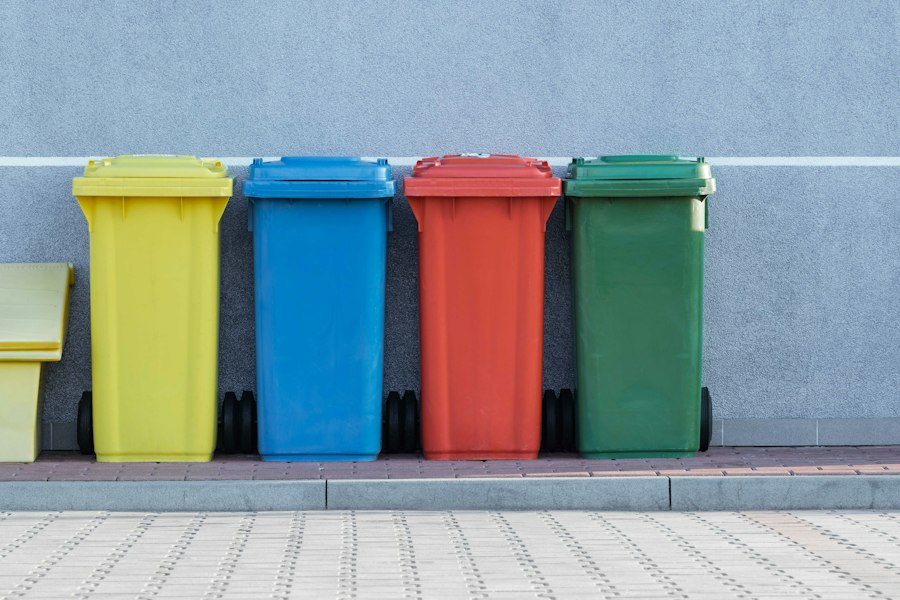

你不知道的德国 · 22
♻️ 德国垃圾分类
Gelber Sack、Bio-Tonne、Glascontainer、Restmüll——扔错垃圾可能被罚款！6个德国垃圾秘密
Gelber Sack / Gelbe Tonne：包装垃圾的神奇归宿
黄袋（Gelber Sack）或黄桶（Gelbe Tonne）是德国最独特的垃圾类别之一。所有带有"Grüner Punkt"（绿点标志）的包装材料——塑料瓶、酸奶杯、铝罐、牛奶盒——都扔进黄袋。这些包装垃圾会被回收再利用。
黄袋通常每两周收一次，免费发放。你可以去市政厅或超市领取新的黄袋。但注意：只有带绿点标志的包装才能扔进黄袋——普通塑料袋和塑料玩具不属于这里！
🇩🇪 Deutsche Originalfassung / 德语原文
Der Gelbe Sack (oder die Gelbe Tonne) ist für Verpackungsabfälle mit dem Grünen Punkt bestimmt — Plastikflaschen, Joghurtbecher, Aluminiumdosen und Getränkekartons. Diese Abfälle werden recycelt. Der Gelbe Sack wird alle zwei Wochen abgeholt und kann kostenlos bei der Stadtverwaltung oder im Supermarkt abgeholt werden.
Bio-Tonne：生物垃圾变肥料
棕色或绿色的Bio-Tonne专门收集有机垃圾：剩菜剩饭、果皮菜叶、咖啡渣和滤纸、蛋壳、花园剪枝等。这些有机垃圾被送到堆肥厂，变成高质量的有机肥料。在德国，Bio-Tonne通常是收费最低的垃圾桶。
但要注意：熟食和肉类在有些地方不能扔进Bio-Tonne（各地规定不同）。另外，所谓的"可降解塑料袋"也不能放入Bio-Tonne，因为它们降解得太慢，会污染堆肥过程。正确做法是用报纸包裹或直接倒入。
💡 德国人甚至在厨房里放一个小的Bio垃圾桶（Biomülleimer），每天把厨余倒进院子里的Bio-Tonne。这是德国厨房的标准配置之一。
Glascontainer：按颜色扔玻璃
德国的玻璃回收可能是全世界最精细的。公共场所的Glascontainer（玻璃回收箱）通常有三个投放口：白色玻璃（Weißglas）、绿色玻璃（Grünglas）和棕色玻璃（Braunglas）。蓝色或其他颜色的玻璃扔进绿色玻璃口。
还有两个重要规则：第一，只能在白天扔玻璃（晚上噪音太大！）；第二，瓶盖不属于玻璃回收——金属盖扔进黄袋，软木塞扔进Restmüll。周日不能扔玻璃——噪音会打扰邻居休息。
🇩🇪 Deutsche Originalfassung / 德语原文
Die Glascontainer in Deutschland haben drei Einwürfe: Weißglas, Grünglas und Braunglas. Blaues oder andersfarbiges Glas kommt ins Grünglas. Wichtig: Glas darf nur tagsüber eingeworfen werden (Lärmschutz!), und Deckel gehören nicht ins Altglas — Metalldeckel in den Gelben Sack, Korken in den Restmüll.
Restmüll：最贵的垃圾
Restmüll（剩余垃圾）是德国最贵的垃圾类别——因为它的处理方式是焚烧，成本最高。Restmüll收集的是所有不能回收的垃圾：卫生用品、烟蒂、吸尘器袋、破碎的镜子、脏纸尿布等。Restmüll的垃圾桶按大小收费，越大的桶越贵。
德国人尽量少用Restmüll的策略就是：把能回收的垃圾分得越细越好。一个典型德国家庭的Restmüll桶可能两周都装不满，而Gelber Sack和Bio-Tonne却总是满满当当。
Pfand：不只是瓶子！
德国的Pfandsystem（押金系统）不仅覆盖饮料瓶：矿泉水瓶和啤酒瓶每个25欧分，某些酸奶杯（是的，酸奶杯！）也有Pfand。你在超市买一瓶水，付了25欧分押金，喝完把空瓶放进Pfandautomat（退瓶机），机器识别后给你一张小票，可以在收银台兑换现金或抵扣购物。
很多德国家庭会在厨房放一个Pfandkiste（退瓶箱），攒够了再一次性搬到超市退。难民和流浪者则靠捡拾人们丢弃的Pfand瓶维生——一个瓶子25欧分，捡一天也能有10-20欧的收入，这被称为"Pfandsammeln"（捡瓶）。
💡 德国有一个专属词叫"Pfandflaschen-Sammler"（退瓶收集者）。在大型活动或火车站，你经常能看到他们翻垃圾桶找瓶子。法律上，被丢弃的Pfand瓶属于"herrenloses Gut"（无主物），谁捡到归谁。
Sperrmüll：街边的"宝藏"
Sperrmüll（大件垃圾）是指旧家具、床垫、地毯等太大塞不进普通垃圾桶的物品。每个德国家庭每年可以免费预约几次Sperrmülltermin（大件垃圾回收日），市政会派人来收。你把旧家具提前一天放在街边就行了。
但有趣的是：很多被放在街边的Sperrmüll其实还能用。德国人会在Sperrmüll堆里"淘宝"——捡到过还能用的沙发、书架甚至电视机。这种行为有专门的词叫"sperrmüllen"。如果你看到街边有不错的家具，大胆拿走——这在德国完全合法！
🇩🇪 Deutsche Originalfassung / 德语原文
Sperrmüll sind große Gegenstände wie alte Möbel, Matratzen oder Teppiche, die nicht in die normale Mülltonne passen. Jeder Haushalt kann mehrmals im Jahr kostenlos einen Sperrmülltermin vereinbaren. Interessant: Viele Leute nutzen den Sperrmüll als Fundgrube — gut erhaltene Möbel vom Straßenrand mitzunehmen, ist in Deutschland legal und wird "sperrmüllen" genannt.
📝 核心词汇表 / Wortschatz
本集文章里的关键德语词汇，配例句加深理解
der Gelbe Sack, -e黄袋（包装垃圾）
📌 Die Plastikflaschen kommen in den Gelben Sack. — 塑料瓶扔进黄袋。
die Bio-Tonne, -n生物垃圾桶
📌 Obst- und Gemüsereste gehören in die Bio-Tonne. — 蔬果残余属于生物垃圾桶。
der Glascontainer, -玻璃回收箱
📌 Das Altglas wird nach Farben getrennt in den Glascontainer geworfen. — 旧玻璃按颜色分别投入玻璃回收箱。
der Restmüll剩余垃圾
📌 Windeln und Zigarettenkippen kommen in den Restmüll. — 尿布和烟蒂扔进剩余垃圾。
das Pfand押金
📌 Auf dieser Flasche sind 25 Cent Pfand. — 这个瓶子有25欧分押金。
der Pfandautomat, -en退瓶机
📌 Ich bringe die leeren Flaschen zum Pfandautomaten. — 我把空瓶拿去退瓶机。
der Sperrmüll大件垃圾
📌 Wir haben einen Sperrmülltermin für nächste Woche vereinbart. — 我们预约了下周的大件垃圾回收。
die Mülltrennung垃圾分类
📌 Die Mülltrennung ist in Deutschland sehr streng. — 德国的垃圾分类非常严格。
recyceln回收利用
📌 Verpackungen mit dem Grünen Punkt werden recycelt. — 带绿点的包装被回收利用。
Leons Deutschzentrum
📖 想读更多德国冷知识？
51 期「你不知道的德国」深度专栏，都在 Leon 德语学习中心。
📚 进入网站